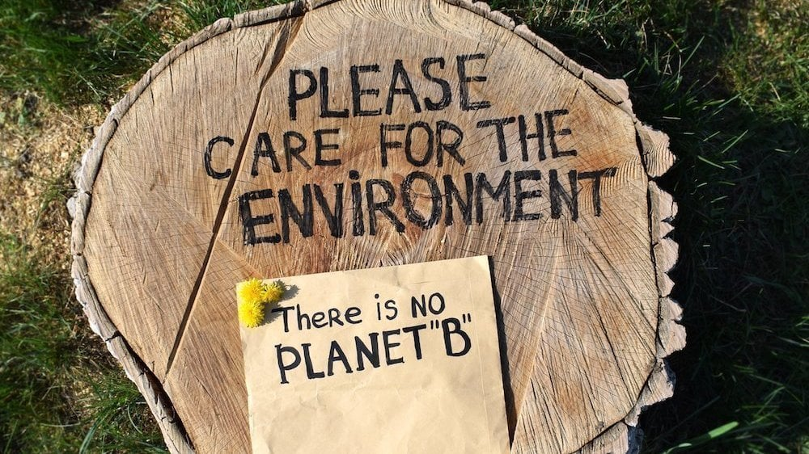

Solutions for Climate Change
Everyone can help limit climate change. From the way we travel, to the electricity and water we use, we can make a difference. Start with these seven actions to help tackle the climate crisis:
-
Transition to Renewable Energy: Shifting our primary energy sources from fossil fuels, such as coal and oil, to clean and renewable sources like solar, wind, hydro, and geothermal power is essential. This helps generate energy without producing greenhouse gas emissions, reducing the carbon footprint associated with electricity production and decreasing our reliance on fossil fuels—a major contributor to climate change.

-
Reforestation and Afforestation: Planting and restoring forests play a crucial role in absorbing carbon dioxide from the atmosphere. Trees capture and store carbon through photosynthesis, offsetting emissions from other sources. Increasing forest cover also enhances oxygen production, contributing to a healthier environment.

-
Sustainable Agriculture: Adopting sustainable farming practices involves reducing greenhouse gas emissions, improving soil health, and minimizing deforestation for agricultural purposes. These practices include efficient water and resource management, organic farming methods, and crop rotation, all of which collectively contribute to a healthier environment while ensuring long-term food security.

-
Transportation Solutions: Promoting public transportation, electric vehicles, and alternative transportation modes like running, jogging, walking, and cycling helps reduce pollution and benefits the environment. These changes can make our transportation cleaner and more environmentally friendly.

-
Circular Economy: Instead of throwing things away, we can make items last longer by reducing, reusing, and recycling (The 3 R's). These actions help reduce waste and emissions. When we're done with something, recycling or repurposing it conserves resources and minimizes environmental impact.

-
Climate Education: Learning about climate change and its effects on the Earth is crucial. It involves understanding how our actions, like using energy or cutting down trees, can harm the planet. When we are better informed, we can make choices to protect our environment and combat climate change.

- Reducing Deforestation: This means cutting down fewer trees in forests. Trees are important because they help clean the air and provide homes for animals. By reducing deforestation and planting more trees, we can maintain healthy forests and protect the environment. 